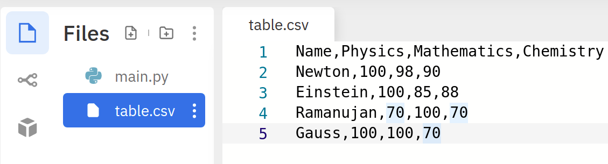

Lesson 7.5
Reading CSV files
CSV files
Now that we are familiar with reading and writing simple files, let us see how to handle slightly more complex files. CSV files1 are quite common in data science.In a CSV file, adjacent values in each line are separated by commas. A CSV file looks like this:
col0,col1,col2,col3
row1,item11,item12,item13
row2,item21,item22,item23
row3,item31,item32,item33
row4,item41,item42,item43
row5,item51,item52,item53Such files are a good choice for representing tabular data. For the rest of this lesson, we will assume that CSV files are used to represent some such tabular data. The first line in the file is called the header. The header gives information about the fields or columns in the data. The rest of the lines can be treated as rows in the data. If this file is represented as a table, it would look like this:
col0 | col1 | col2 | col3 |
|: ——– |: —— :|: —— :|: —— :| | row1 | item11 | item12 | item13 | | row2 | item21 | item22 | item23 | | row3 | item31 | item32 | item33 | | row4 | item41 | item42 | item43 | | row5 | item51 | item52 | item53 |
Reading a CSV file
Let us create a CSV file in Replit and name it table.csv:

Opening and reading a CSV file is no different from opening a text file. Let us try to print the lines in the file:
This is the output we get:
Name,Physics,Mathematics,Chemistry
Newton,100,98,90
Einstein,100,85,88
Ramanujan,70,100,70
Gauss,100,100,70So far so good. Now that we are able to extract the lines from the file, let us start asking some questions.
!!! question ” ” Print the chemistry marks scored by the students, one in each line.
This requires us to extract the last column from the file. How do we do this? Consider any one line in the file, say the second one:
# The `\n` at the end will be present for all lines except the last one
line = 'Newton,100,98,90\n'
line = line.strip() # removes the \n characterThis is a string that corresponds to one row in the file. If we need to separate it into different columns, we need to use the #!py split() method and split the line based on a comma:
This returns a list of strings:
To extract the last column, we just need to take the last element from this list and convert it into an integer:
line = 'Newton,100,98,90'
line = line.strip()
columns = line.split(',')
chem_marks = int(columns[-1])
print(chem_marks)That is all! We have done this for one row. We need to do this for all the rows. Enter loop:
f = open('table.csv', 'r')
for line in f:
line = line.strip()
columns = line.split(',')
chem_marks = int(columns[-1])
print(chem_marks)
f.close()Aha, but we get an error:
Traceback (most recent call last):
File "main.py", line 5, in <module>
chem_marks = int(columns[-1])
ValueError: invalid literal for int() with base 10: 'Chemistry'Can you see why? We have tried to convert the last column of the header into an integer as well. The moral of the story is that when we are reading CSV files, we need to find a way to deal with the header. Let us modify our code towards that end:
f = open('table.csv', 'r')
header = f.readline()
# The file object has finished reading the first line
# It is now ready to read from the second line onwards
for line in f:
line = line.strip()
columns = line.split(',')
chem_marks = int(columns[-1])
print(chem_marks)
f.close()This works! In the second line, we read the header. Now, when the for loop starts in line 5, we are ready to read from the second line in the file. Consider the following approach that uses the #!py readlines() method alone:
f = open('table.csv', 'r')
lines = f.readlines()
# lines[1: ] is the rest of the list
# after ignoring the header
for line in lines[1: ]:
line = line.strip() # strip the line of \n
columns = line.split(',') # split based on comma
chem_marks = int(columns[-1]) # convert last column to int
print(chem_marks)
f.close()#!py readlines() is a reasonable choice for reading small files, say under 1000 lines. We get all the lines of the files in a list. Reading a file reduces to processing a list of strings. If lines is the list of lines, then lines[i] corresponds to the \((i + 1)^{th}\) line in the file. Going the other way, the \(i^{th}\) line in the file corresponds to the string lines[i - 1].
!!! warning “Processing large files”
When it comes to large files, `#!py readline()` is the best method to use. Processing large files is best done by reading one line at a time. Using `#!py readlines()` for large files is a dangerous idea. This is because, `#!py readlines()` dumps the entire content of the file into a list of strings. When the file is large, this list will occupy a large amount of memory. Let us try to write the same program given above using the `readline` method:
```python
f = open('table.csv', 'r')
header = f.readline().strip() # this is for the header
line = f.readline() # second line; actual rows begin
while line:
line = line.strip() # strip the line of \n
columns = line.split(',') # split based on comma
chem_marks = int(columns[-1]) # convert last column to int
print(chem_marks)
line = f.readline() # read the next line in the file
f.close()
```Files to Collections
It is often useful to convert a CSV file and store in a suitable collection. We could do this in several ways. Here, let us try to create the following list of dictionaries from the file:
data = [
{'Name': 'Newton', 'Physics': 100, 'Mathematics': 98, 'Chemistry': 90},
{'Name': 'Einstein', 'Physics': 100, 'Mathematics': 85, 'Chemistry': 88},
{'Name': 'Ramanujan', 'Physics': 70, 'Mathematics': 100, 'Chemistry': 70},
{'Name': 'Gauss', 'Physics': 100, 'Mathematics': 100, 'Chemistry': 70}]Couple of points to note.
- This is a list of dictionaries. Each dictionary in the list corresponds to one row in the file.
- The elements in the header appear as keys in every dictionary.
- The values of the dictionary are of different data types. Names are strings, marks are integers.
This is going to be a fairly long code. Let us break it down. First, some basic processing to get the list of lines from the file after stripping them of the trailing newlines:
f = open('table.csv', 'r')
lines = [ ]
for line in f.readlines():
line = line.strip()
lines.append(line)
# Now, we have the list of linesNext, let us get the details of the header:
python linenums="7" header = lines[0].split(',') # lines[0] is the first row num_cols = len(header) # Now, we have the header information # We also know the number of columns in the file
Now, it is time to go through the remaining lines in the file:
python linenums="11" ### Block-3 ### data = [ ] # list to store the contents for line in lines[1: ]: # ignore the header cols = line.split(',') # split the column based on comma row_dict = dict() # create a dict to store this particular row for i in range(num_cols): # go through each element (column) in this row key = header[i] # key will be this column's name if key == 'Name': # are we storing a name or a number? value = cols[i] # since this is a name, don't convert to int else: value = int(cols[i]) # since this is marks, convert to int row_dict[key] = value # update dict data.append(row_dict) # append this row to the list data f.close()